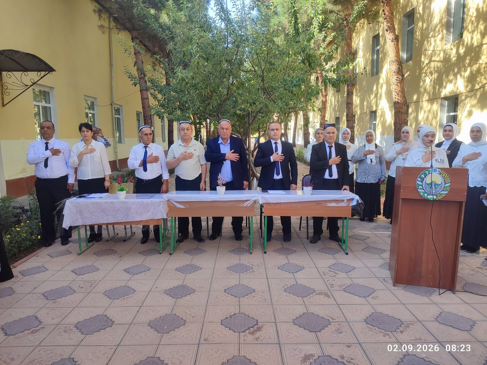
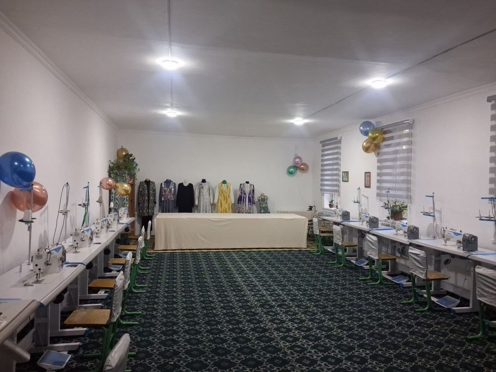
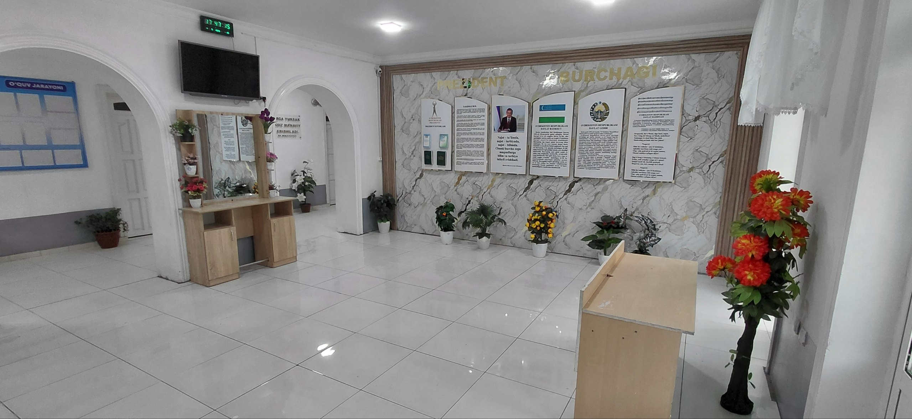
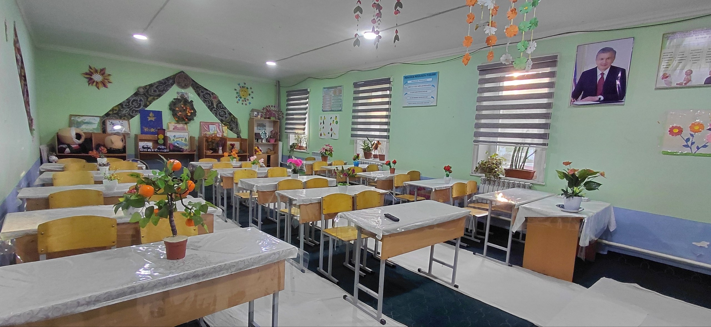

TADBIRTexnikumda yangi o'quv yili tantanali ravishda boshlandi
O'quvchilar va pedagogik jamoa ishtirokida yangi o'quv yiliga bag'ishlangan tantanali tadbir bo'lib o'tdi.
Batafsil →Ta’lim muassasamizdagi so‘nggi yangiliklar, uchrashuvlar, amaliy mashg'ulotlar va muhim tadbirlar.

TADBIRO'quvchilar va pedagogik jamoa ishtirokida yangi o'quv yiliga bag'ishlangan tantanali tadbir bo'lib o'tdi.
Batafsil → UCHRASHUV
UCHRASHUV
Texnikum yoshlari va faollari bilan tuman rahbariyatining ochiq muloqoti tashkil etildi.
Batafsil →
AMALIYOTO'quvchilar zamonaviy tikuv mashinalari yordamida bichish-tikish sirlarini amalda o'rganmoqda.
Batafsil →
MADANIYATYoshlarning ijodiy va intellektual qobiliyatlarini rivojlantirishga bag'ishlangan bellashuv o'tkazildi.
Batafsil → OBODONLASHTIRISH
OBODONLASHTIRISH
Texnikum bog'i va hududida manzarali daraxtlar ekilib, obodonlashtirish ishlari olib borildi.
Batafsil →
TA'LIMO'quvchilar kompyuter sinfxonasida zamonaviy dasturlash asoslari bo'yicha amaliy bilim olmoqda.
Batafsil →